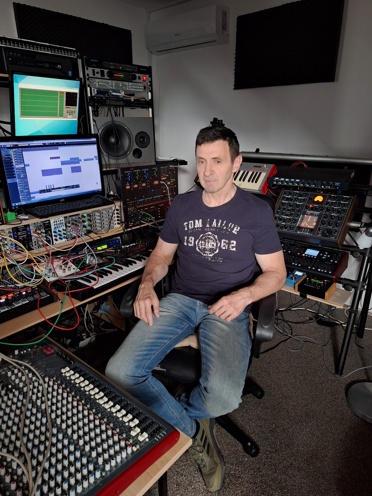

Discography Covers


Original Music & Sound Design for Film, TV and Multimedia
Bálint Tihamér – the artist behind Goasia-FX – is a composer, producer, and sound designer with over 30 years of experience. While he is also the founding creator behind the Goa trance project Goasia, Goasia-FX is his fully independent creative platform, dedicated solely to original music for visual media.
Drawing from analog synths, orchestral arrangements, and ethnic influences, his music blends futuristic textures with timeless emotion.

Not just sample libraries – but true sonic sculpting from custom-designed instruments.
📧 tihamerbalint67@gmail.com
(This is the only official contact address.)